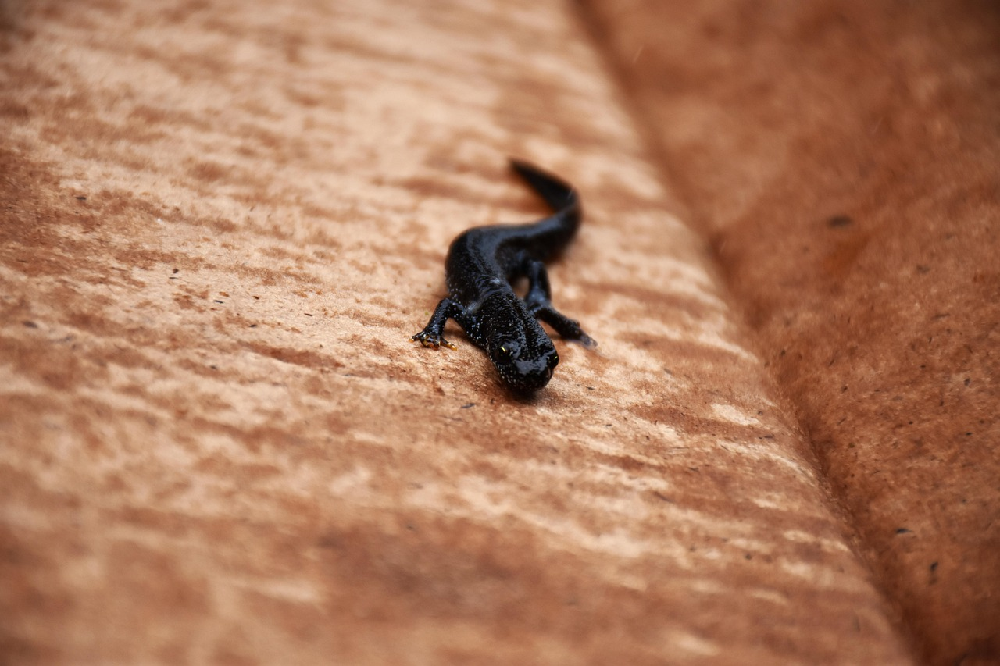
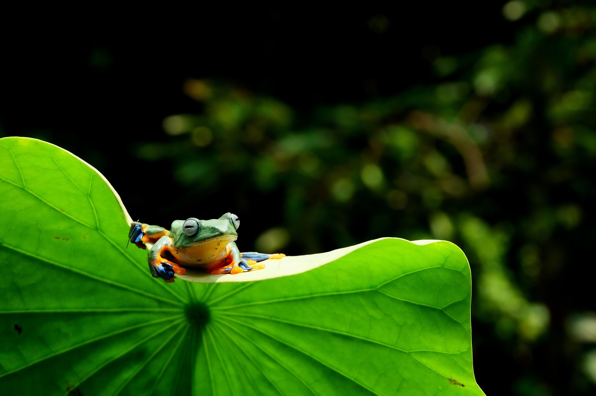
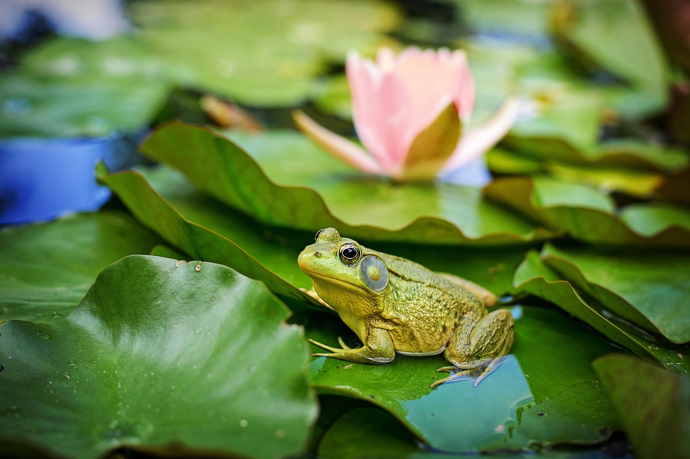

hojarasca, troncos podridos y suelos húmedos.
Es terrestre y nocturna. Permanece escondida durante el día
bajo hojas o piedras y sale de noche para buscar alimento.
CARACTERÍSTICAS PRINCIPALES
2-Pies planos, que le ayudan a moverse en suelos húmedos.
3-Piel húmeda y lisa para respirar parcialmente por la piel..
4-Se alimenta de pequeños insectos y larvas.
5-Vive en lugares muy húmedos para evitar deshidratarse.
AJOLOTE MEXICANO

HÁBITAT Y ESTILO DE VIDA
en Xochimilco, en Ciudad de México.
Es acuático toda su vida y activo principalmente de noche.
Se alimenta de pequeños animales del agua.
CARACTERÍSTICAS PRINCIPALES
2-Puede regenerar partes del cuerpo como patas y cola.
3-Permanece en estado larvario toda su vida (neotenia).
4-Se alimenta de gusanos, insectos y pequeños peces.
5-Es un animal en peligro de extinción..
TRITON CRESTADO

HÁBITAT Y ESTILO DE VIDA
de Europa, con vegetación cercana.
Pasa parte del año en el agua y parte en tierra.
Es más activo por la noche.
CARACTERÍSTICAS PRINCIPALES
2-Piel oscura con manchas.
3-Se alimenta de insectos, gusanos y pequeños invertebrados.
4-Puede regenerar partes del cuerpo.
5-Alterna entre vida acuática y terrestre.
RANA VOLADORA ASIÁTICA

HÁBITAT Y ESTILO DE VIDA
de árboles altos y cuerpos de agua.
Es arbórea, pasa la mayor parte del tiempo en árboles
y puede planear entre ramas.
CARACTERÍSTICAS PRINCIPALES
2-Color verde brillante que ayuda a camuflarse.
3-Vive principalmente en árboles.
4-Se alimenta de insectos y pequeños invertebrados.
5-Puede deslizarse de árbol en árbol como si “volara”.
RANA TORO

HÁBITAT Y ESTILO DE VIDA
Prefiere climas cálidos o templados y suele encontrarse en América,
aunque también fue introducida en otros lugares.
En cuanto a su estilo de vida, el wombat es principalmente nocturno: sale por la noche a buscar comida.
Es herbívoro, por lo que se alimenta de hierbas, raíces y corteza de plantas. También es un animal
solitario y tranquilo, que pasa gran parte del tiempo descansando en su madriguera.
CARACTERÍSTICAS PRINCIPALES
2-Color verde o marrón que le ayuda a camuflarse
3-Canto fuerte, parecido al sonido de un toro.
4-Patas traseras muy fuertes para saltar y nadar
5-Lengua pegajosa y rápida para atrapar presas.